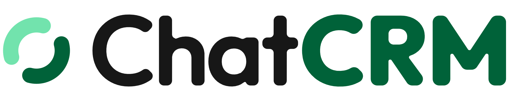

Todo en svg/ (vectorial) y png/ (transparente). «light» = para fondos claros,
«dark» = para fondos oscuros, «mono» = una tinta con currentColor.
Avatar de la organización (github/avatar-500.png, GitHub redondea las esquinas) y la imagen
para compartir del repositorio (Settings → Social preview).
Para la carga o el login: el nombre se escribe, el cursor parpadea dos veces y se va. Se reproduce una vez y respeta «reducir movimiento». Recarga la página para verla otra vez.
Verde profundo#006239 · CRM, insignia
Menta#72E3AD · CRM en oscuro
Tinta#171717 · Chat en claro
Escarcha#E2E8F0 · Chat en oscuro
Papel#FAFAFA · fondo claro
Noche#121212 · fondo oscuro